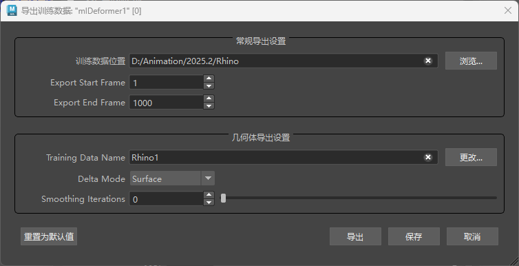

ML 变形器“导出训练数据”(Export Training Data)窗口用于导出训练机器学习模型所需的数据。训练数据的形式是模型正在学习如何近似的原始、复杂变形器堆栈的示例姿势。Maya 场景中的不同帧应设置不同的姿势，以允许模型确定输入（指定的控件）和输出（变形的几何体）之间的相关性。有关如何随机生成这些示例姿势的详细信息，请参见 ML 变形器控件收集器属性。或者，使用提供大量运动的现有动画填充场景可能足以用于训练和/或与随机生成的姿势一起使用，以提供额外的示例。
注： ML 变形器训练数据窗口与 ML 变形器训练设置窗口不同。ML 变形器“导出训练数据”(Export Training Data)窗口可用于导出将对模型进行训练的训练集（示例姿势）。另一方面，ML 变形器训练设置窗口可用于配置在训练过程中使用的各种设置。
ML 变形器“导出训练数据”(Export Training Data)窗口可用于设置采样姿势，以示教 ML 变形器。训练数据姿势是变形中不同点处目标对象和 ML 变形器模型之间差距的快照。
若要了解如何使用 ML 变形器将复杂变形传递到源对象，请参见创建 ML 变形器和使用单独的目标几何体创建 ML 变形器。
打开 ML 变形器“导出训练数据”(Export Training Data)窗口
- 在 ML 变形器属性(ML Deformer Attributes)选项卡中，单击
 图标。
图标。
- 在 ML 变形器属性(ML Deformer Attributes)选项卡中，在“ML 模型”(ML Model)列上单击鼠标右键，然后选择“导出训练数据...”(Export Training Data...)。

常规导出设置(General Export Settings)
通过 ML 变形器“导出训练数据”(Export Training Data)窗口的该区域，可以设置导出位置以及应将场景的哪个帧范围用于训练集。
- 训练数据位置(Training Data Location)
- 单击“浏览”(Browse)以浏览到要保存训练数据的文件夹。这可以是一个临时目录，因为在对模型进行训练后，无需训练数据，除非您想使用相同的数据对其重新训练（例如，测试不同的训练设置）。
- 导出开始帧(Export Start Frame)/导出结束帧(Export End Frame)
- 指定要用于创建训练数据的动画范围。用于训练的帧越多，生成的变形近似可能越精确。但是，动画范围越大，训练和导出过程就越慢。
几何体导出设置(Geometry Export Settings)
通过 ML 变形器“导出训练数据”(Export Training Data)窗口的该区域，可以指定导出的几何体应如何表示以供机器学习模型处理。
- 训练数据名称(Training Data Name)
- 输入将包含导出训练数据的文件夹的名称。单击“更改”(Change)可重用先前导出的训练数据集中的文件夹。将为文件夹提供后缀 .mltd，以便更轻松地标识其用途，例如，使用“test”在指定目录中创建名为 test.mltd 的文件夹。
-
提示： 将光标悬停在“训练数据名称”(Training Data Name)或“更改”(Change)按钮上，可查看有关训练数据的信息，例如计数、帧范围等。
- 增量模式(Delta Mode)
- 设置一种模式，用于指示如何在导出数据中表示基础几何体和目标几何体之间的差距。具体来说，就是原始“源”几何体和复杂“目标”几何体之间的“增量”近似。目标几何体和源几何体之间的差距是 ML 变形器最终尝试学习和预测的内容。从以下模式中进行选择，以选择不同的选项来计算和表示增量。
-
注：
- 根据绑定的不同，在某些情况下，将“增量模式”(Delta Mode)设置为“曲面”(Surface)可能会产生瑕疵和不正确的锯齿变形。这种情况发生在曲面顶点帧的计算不一致时，通常是由于某些姿势中的顶点重叠。如果从训练集中删除不良姿势，结果可能会有所改善。但是，在经过训练后，ML 变形器在这些姿势和类似姿势上的性能仍然较差。
- 在经过大量控件的训练后，ML 模型往往会学习控件与网格无关部分的变形之间的错误关联。对同时触发较少控件的姿势进行训练有助于解决这个问题。
-
- 偏移(Offset)
- 如果对结果不满意，最后使用“偏移”(Offset)进行故障排除，因为要处理长关节链很困难。
- 根据局部旋转，“偏移”(Offset)使用变形前和变形后顶点位置之间的对象空间差进行近似。“偏移”(Offset)模式可避免复杂增量计算出现潜在问题，但“难度”较大，即 ML 模型需要学习的工作较多。
- 曲面(Surface)
- “曲面”(Surface)模式表示沿每个顶点曲面的置换的增量。它会忽略父变换，建议用于较深关节层级的近似。“曲面”(Surface)模式（默认设置）通常可以产生良好的结果。但是，有时（例如顶点重叠时），“曲面”(Surface)模式可能会产生不需要的瑕疵，您可以使用“平滑迭代次数”(Smoothing Iterations)值将其最小化。
- 平滑迭代次数(Smoothing Iterations)
- 使用“曲面”(Surface)增量模式时，使用“平滑迭代次数”(Smoothing Iterations)设置可减少瑕疵。如果“平滑迭代次数”(Smoothing Iterations)值大于 0，Delta Mush 算法将在导出期间平滑几何体。
- 重置为默认值(Reset to Defaults)
- 恢复“导出训练数据”(Export Training Data)窗口的原始设置。
- 导出(Export)
- 使用此窗口中指定的设置创建 ML 变形器训练数据。完成后，将为导出的数据指定“训练数据名称”(Training Data Name)下指定的名称，以便您能够将其与其他数据区分开来，并在以后训练机器学习模型时在训练集之间切换。
- 保存(Save)
- 单击“保存”(Save)可保存“导出训练数据”(Export Training Data)窗口中的当前设置。